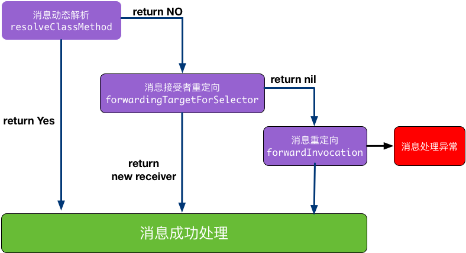

一、什么是动态语言和Runtime
静态语言：编译阶段就要决定调用哪个函数，如果函数未实现就会编译报错。
动态语言：编译阶段并不能决定真正调用哪个函数，只要函数声明过即使没有实现也不会报错。
Runtime：一套底层纯C语言API，OC代码最终都会被编译器转化为运行时代码，通过消息机制决定函数调用方式，这也是OC作为动态语言使用的基础。
二、消息机制的基本原理
1.编译阶段
OC的方法调用都是类似[receiver selector]的形式，在编译阶段[receiver selector]方法被编译器转化
- 不带参数的方法被编译为：objc_msgSend(receiver，selector)
- 带参数的方法被编译为：objc_msgSend(recevier，selector，org1，org2，…)
2.运行时阶段
消息接收者recever寻找对应的selector，也分为两种情况
- 接收者能找到对应的selector，直接执行接收receiver对象的selector方法
- 接收者找不到对应的selector，消息被转发或者临时向接收者添加这个selector对应的实现内容，否则崩溃
三、与Runtime的交互
按照与Runtime交互程度从低到高排序分为以下三种方式
1.OC源代码(Objec-C Source Code)
OC代码会在编译阶段被编译器转化。OC中的类、方法和协议等在Runtime中都由一些数据结构来定义。所以，我们平时直接使用OC编写代码，其实这已经是在和Runtime进行交互了，只不过这个过程对于我们来说是透明的。
2.NSObject方法(NSObject Methods)
1 | + (Class)class OBJC_SWIFT_UNAVAILABLE("use 'aClass.self' instead"); //返回Class对象 |
3.使用Runtime函数
Runtime系统是一个由一系列函数和数据结构组成，具有公共接口的动态共享库。头文件存放于/usr/include/objc目录下。在我们工程代码里引用Runtime的头文件，同样能够实现类似OC代码的效果，一些代码示例如下：
1 | #import <objc/runtime.h> |
注：要使用objc_msgSend方法需要在项目的Build Settings里的Enable Strict Checking of objc_msgSend Calls改为No。
四、Runtime的数据结构
1.id—>objc_object
1 | ///A pointer to an instance of a class. |
2.Class - >objc_classs
1 | typedef struct objc_class *Class; |
3.SEL
1 | typedef struct objc_selector *SEL; //SEL在OC中称作方法选择器，用于表示运行时方法的名字 |
注意：不同类中相同名字的方法对应的方法选择器是相同的。
获得SEL的三种方法
- 使用@selector(方法名字符串);
- 使用NSSelectorFromString(@“方法名字符串”);
- 使用sel_registerName(“方法名字符串”)；
4.Ivar
1 | /// An opaque type that represents an instance variable. |
5.Method
1 | /// An opaque type that represents a method in a class definition. |
6.IMP
1 | /// A pointer to the function of a method implementation. |
五、深入理解Runtime消息发送
1.运行时阶段的消息发送的详细步骤
- 检测selector 是不是需要忽略的。比如 Mac OS X 开发，有了垃圾回收就不理会retain,release 这些函数了。
- 检测target 是不是nil 对象。ObjC 的特性是允许对一个 nil对象执行任何一个方法不会 Crash，因为会被忽略掉。
- 如果上面两个都过了，那就开始查找这个类的 IMP，先从 cache 里面找，若可以找得到就跳到对应的函数去执行。
- 如果在cache里找不到就找一下方法列表methodLists。
- 如果methodLists找不到，就到超类的方法列表里寻找，一直找，直到找到NSObject类为止。
- 如果还找不到，Runtime提供了如下三种方法来处理：动态方法解析、消息接受者重定向、消息重定向

2.动态方法解析(Dynamic Method Resolution)
没有找到方法时，Runtime为我们提供一次动态添加方法实现的机会，涉及到的方法有
1 | + (BOOL)resolveClassMethod:(SEL)sel //类方法未找到时调起，可于此添加类方法实现 |
例子如下所示
1 | #import "Person.h" |
注意到class_getMethodImplementation的最后一个参数其实是函数的返回值和参数类型编码常用的类型编码有下面这些
| 类型 | 说明 | 类型 | 说明 |
|---|---|---|---|
| c | A char | Q | An unsigned long long |
| i | An int | f | A float |
| s | A short | d | A double |
| l | A long | B | A C++ bool or a C99 _Bool |
| q | A long long | v | A void |
| C | An unsigned char | * | A character string (char *) |
| I | An unsigned int | @ | An object (whether statically typed or typed id) |
| S | An unsigned short | # | A class object (Class) |
| L | An unsigned long | : | A method selector (SEL) |
3.消息接收者重定向
使用Runtime替换消息接收者的为其他对象，从而保证程序的继续执行。
1 | //重定向类方法的消息接收者，返回一个类 |
动态方法解析阶段返回NO时，我们可以通过forwardingTargetForSelector可以修改消息的接收者，该方法返回参数是一个对象，如果这个对象是非nil，非self，系统会将运行的消息转发给这个对象执行。否则，继续查找其他流程。
4.消息重定向
当以上两种方法无法生效，那么这个对象会因为找不到相应的方法实现而无法响应消息，此时Runtime系统会通过forwardInvocation：消息通知该对象，给予此次消息发送最后一次寻找IMP的机会
1 | - (void)forwardInvocation:(NSInvocation *)anInvocation； |
总结
- forwardingTargetForSelector仅支持一个对象的返回，也就是说消息只能被转发给一个对象，而forwardInvocation可以将消息同时转发给任意多个对象，这就是两者的最大区别。
- forwardInvocation能够修改消息的内容，从而实现更强大的功能